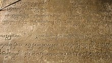
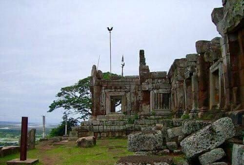
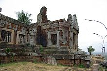
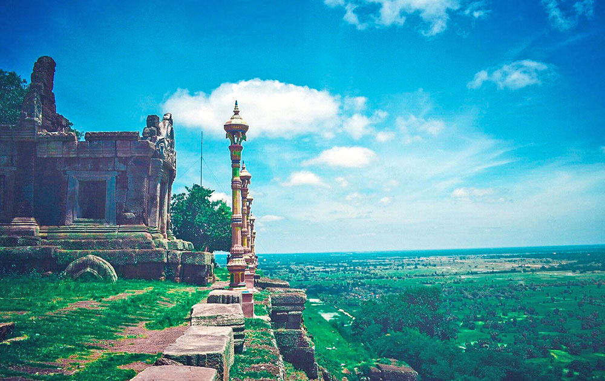

សំណង់នៃប្រាង្គប្រាសាទ បុរាណជាមរតក វប្បធម៌ខ្មែរដ៏មានតម្លៃដោយមិនអាច កាត់ថ្លៃបានឡើយ។ លក្ខណៈពិសេសនៃបុរាណដ្ឋាននេះគេតែងមានការកត់សំគាល់នូវប្រវត្តិនៃការកសាងពីរ បែបខុសគ្នា គឺតាមរយៈអ្នកបុរាណវិទ្យាធ្វើការសិក្សាស្រាវជ្រាវតាម រយៈសិលាចារឹកផង និងមួយបែបទៀតតាមរយៈរឿងព្រេង និទានដែលប្រជាពលរដ្ឋរស់នៅតំបន់ជុំវិញប្រាសាទមានការចេះចាំមាត់ហើយបាននិយាយតៗ គ្នាផង។ តាមសិលាចារឹក លើភ្នំជីសូរ មានឈ្មោះថា ស្រីសូរ្យបព៌ត ឫ សូរ្យបព៌ត ដែលមានន័យថា ភ្នំរបស់ព្រះបាទសូរ្យវរ្ម័នទី១។នៅក្នុងប្រាសាទភ្នំជីសូរមាន សិលាចារឹកពីរ សិលាចារឹកទីមួយនិយាយពីការថ្វាយគ្រឿងសក្ការៈបូជានានា ចំពោះអាទិទេពនៅលើភ្នំដែលមានឈ្មោះថា នៅសូរ្យបព៌ត ដែលមានន័យថា ភ្នំសូរ្យ នៅក្នុងឆ្នាំ ១០១៩ នៃគ.ស។ ចំនែកឯសិលាចារឹកមួយទៀតគឺសិលាចារឹកទីពីរ បានអធិប្បាយពីរាជវង្សរបស់ព្រះបាទសូរ្យវរ្ម័នទី២ ដែលជាអាយ្យកាអាយ្យកោរបស់ព្រះអង្គគឺជាកូនចៅរបស់ស្ដេចហិន្យវរ្ម័ន។
ប្រាសាទភ្នំជីសូរ
ភ្នំជីសូរគេអាចមើលឃើញភ្នំជីសូរតាំងពីច្រកចូលទៅកាន់ភ្នំតាម៉ៅ នៅតាមផ្លូវជាតិលេខ២ ឆ្ពោះទៅទិសខាងត្បូង ប៉ុន្តែភ្ញៀវទេសចរណ៍ត្រូវបន្តដំណើរប្រមាណ ២៥គ.ម ទើបទៅដល់ទីនោះ។ នៅលើភ្នំជីសូរ មានប្រាសាទបុរាណមួយថ្វីត្បិតតែមានសភាពបាក់បែកភាគច្រើន ប៉ុន្តែវាមានលក្ខណៈល្អផ្តាច់លើសប្រាសាទនានា នៅក្នុងតំបន់នេះ។ នៅលើកំពូលភ្នំនេះគេអាចគយគន់មើលទេសភាពវាលស្រែ នៅក្នុងខេត្តតាកែវដ៏ល្អប្រណិតគ្រប់ទិសទី។ ប្រាសាទភ្នំជីសូរបានស្ថាបនាលើខ្នងភ្នំមួយមានកំពស់៣៨០ម៉ែត្រនៅដើមសតវត្សរ៍ទី១១ (១០០២-១០៥០) ដោយព្រះបាទសូរ្យវរ្ម័នទី១ សំរាប់ឧទ្ទិសដល់ព្រហ្មញ្ញសាសនា។ ប្រាសាទនេះសាងសង់អំពីថ្មភក់ និងលីប៉ូនីត មានបណ្តោយ ៦០ម និងទទឹង ៥០ម និងមានថែវ២ជាន់ព័ទ្ធជុំវិញ។ ថែវទី២ មានទំហំតូចជាងថែវទី១ និងនៅចំកណ្តាល មានទីសក្តារៈមួយដែលសំខាន់ ហោយមានទ្វារឆ្លាស់ពីរ ខាងក្នុងមានបដិមាករមួយធ្វើអំពីឈើ។ ដោយឡែកទៀត គេប្រទះឃើញក្បាច់ចំលាក់យ៉ាងល្អប្រណិតនៅផ្តែរ និងសរសរពេជ្រ។ គេនិយមឡើងលើភ្នំជីសូរ តាមជណ្តើរថ្មខាងលិចដែលមានចំនួន ៣៩០កាំ ហើយ ចុះតាមជណ្តើរខាងត្បូង ដែលមាន ៤០៨កាំ។ នៅចំមុខប្រាសាទមានក្លោងទ្វារ និងមាន ជណ្តើរមួយទៀត សាងសង់តាំងពីសម័យកសាងប្រាសាទដែលភ្ជាប់ទៅ ប្រាសាទសែនត្មុល និងប្រាសាទរវាំង និងទន្លេអ៊ុំ ដែលជាបឹងកាលពីអតីតកាល ដែលគេចាត់ទុកជាបឹងដ៏ពិសិដ្ឋ សំរាប់ធ្វើពិធីងូតទឹកលាងបាបតាមលទ្ធិព្រាហ្មញ្ញសាសនា។ ក្រៅពីនេះនៅមានប្រាសាទជាច្រើនទៀតដ៏ទូលាយ បែរមុខទៅទិសខាងកើត និងពាយ័ព្យ មានបណ្តោយប្រវែង១០០ម និង ទទឹង៨០ម។ មួយផ្នែកធំនៃប្រាសាទភ្នំជីសូរត្រូវបានខូចខាត។
ហោត្រៃនៃប្រាសាទព្រះវិហារ នៅប៉ែកខាងត្បូងនៃប្រាសាទ មានព្រះវិហារពុទ្ធសាសនាសង់ថ្មីមួយ និងនៅខាងក្រោយ មានសាលាធម្មសភាមួយខ្នងដែលមានកុដិព្រះសង្ឃ និងមានទីសក្ការៈតូចមួយទៀត ហើយមានអាងទឹកចំណាស់មួយធ្វើអំពីបេតុងជាថ្នាក់ៗ។
ជីសូរជារមណីដ្ឋានទេសចរណ៍ប្រវត្តិសាស្រ្តរបស់ខេត្តតាកែវ។ មណ្ឌលនេះបាន និង កំពុងឆ្លុះបញ្ជាំងនូវប្រាសាទបុរាណដែលមានកេរ្តិ៍ដំណែលវប្បធម៌ អរិយធម៌បេតិកភ័ណ្ឌជាតិខ្មែរ គួបផ្សំនឹងទស្សនីយភាពធម្មជាតិ និងសមិទ្ធិផលសង្គមផ្សេងៗទៀតក្នុងនោះមានជាអាទិ៍ គឺវត្តភ្នំជីសូរ។ ក្រៅពីនោះគេឃើញមានរូងវិមានច័ន្ទ ស្ថិតនៅប្រមាណ១៥០ម ពីខាងត្បូងប្រាសាទភ្នំជីសូរ។ រូងធម្មជាតិនេះមានតាំងពីយូរយាណាស់មកហើយ។ វាជាទីស្ងាត់សំរាប់ពួកសមណៈព្រាហ្មណ៍តាំងសមាធិឬសំរាប់អ្នកធ្វើធូតុង្គដើរចង្រ្គមភាវនាធម៌។ កាលពីសម័យសង្រ្គាមក្នុងឆ្នាំ១៩៧០មានការទំលាក់គ្រាប់បែកយ៉ាងខ្លាំងបណ្តាលអោយរូងនេះ ត្រូវបិទជិតដោយដុំថ្មធំៗមិនអាចចេញចូលបានទៀតឡើយ។
ក្រៅពីប្រាសាទគេឃើញមានវត្តភ្នំជីសូរបានកសាងក្នុងឆ្នាំ១៩១៧ ដែលមានចៅអធិការវត្តគ្រប់គ្រងតាំងពីដើមរៀងមកមានចំនួន៥អង្គ។ វត្តនេះត្រួវបានបំផ្លិចបំផ្លាញខ្ទេចខ្ទីរក្នុងសង្គ្រាមឆ្នាំ១៩៧០ ហើយចាប់ផ្តើមកសាងជាថ្មីក្នុងឆ្នាំ១៩៧៩តរៀងមក។
បន្ទាប់ពីដើរមើលប្រាសាទ ភ្ញៀវទេសចរក៏អាចមកខាងក្រោម ដើម្បីបរិភោគអាហារពេលថ្ងៃត្រង់ ជាមួយមាន់ដុតខេត្តតាកែវ ដែលជាមាន់ស្រែមានរសជាតិឆ្ងាញ់ ភ្នំជីសូរគឺជាកន្លែងដែលពេញនិយមសម្រាប់ប្រជាជននៅក្នុងតំបន់ ក្នុងការលំហែរកាយ នៅរដូវបុណ្យទានដូចជា ចូលឆ្នាំខ្មែរ ភ្ជុំបិណ្ឌ និងថ្ងៃឈប់សម្រាកជាដើម។
តំបន់កសិទេសចរណ៍ ហ៊ុន សែន ភ្នំជីសូរស្ថិតនៅក្នុងភូមិសាស្រ្តស្រុកបាទី និងស្រុកព្រៃកប្បាស ដែលមានវាលស្រៃធំល្វឹងល្វើយ និង ប្រព័ន្ធធារាសាស្រ្តខ្វាត់ខ្វែង ក្នុងទំហំ៥១៣ហិចតា និង ស្រែវស្សា ១៣៨៦ហិចតា ដែលមានអាងទឹកបី កន្លែងជាប់ៗគ្នា គឺ ធ្នស់តាគង់ ទួលរលក និងសែនពារាម។
ប្រវត្តិ
ទីតាំងភូមិសាស្ត្
គេអាចមើលឃើញភ្នំជីសូរតាំងពីច្រកចូលទៅកាន់ភ្នំតាម៉ៅ នៅតាមផ្លូវជាតិលេខ២ ឆ្ពោះទៅទិសខាងត្បូង ប៉ុន្តែភ្ញៀវទេសចរណ៍ត្រូវបន្តដំណើរប្រមាណ ២៥គ.ម ទើបទៅដល់ទីនោះ។ នៅលើភ្នំជីសូរ មានប្រាសាទបុរាណមួយថ្វីត្បិតតែមានសភាពបាក់បែកភាគច្រើន ប៉ុន្តែវាមានលក្ខណៈល្អផ្តាច់លើសប្រាសាទនានា នៅក្នុងតំបន់នេះ។ នៅលើកំពូលភ្នំនេះគេអាចគយគន់មើលទេសភាពវាលស្រែ នៅក្នុងខេត្តតាកែវដ៏ល្អប្រណិតគ្រប់ទិសទី។ ប្រាសាទភ្នំជីសូរបានស្ថាបនាលើខ្នងភ្នំមួយមានកំពស់៣៨០ម៉ែត្រនៅដើមសតវត្សរ៍ទី១១ (១០០២-១០៥០) ដោយព្រះបាទសូរ្យវរ្ម័នទី១ សំរាប់ឧទ្ទិសដល់ព្រហ្មញ្ញសាសនា។ ប្រាសាទនេះសាងសង់អំពីថ្មភក់ និងលីប៉ូនីត មានបណ្តោយ ៦០ម និងទទឹង ៥០ម និងមានថែវ២ជាន់ព័ទ្ធជុំវិញ។ ថែវទី២ មានទំហំតូចជាងថែវទី១ និងនៅចំកណ្តាល មានទីសក្តារៈមួយដែលសំខាន់ ហោយមានទ្វារឆ្លាស់ពីរ ខាងក្នុងមានបដិមាករមួយធ្វើអំពីឈើ។ ដោយឡែកទៀត គេប្រទះឃើញក្បាច់ចំលាក់យ៉ាងល្អប្រណិតនៅផ្តែរ និងសរសរពេជ្រ។ គេនិយមឡើងលើភ្នំជីសូរ តាមជណ្តើរថ្មខាងលិចដែលមានចំនួន ៣៩០កាំ ហើយ ចុះតាមជណ្តើរខាងត្បូង ដែលមាន ៤០៨កាំ។ នៅចំមុខប្រាសាទមានក្លោងទ្វារ និងមាន ជណ្តើរមួយទៀត សាងសង់តាំងពីសម័យកសាងប្រាសាទដែលភ្ជាប់ទៅ ប្រាសាទសែនត្មុល និងប្រាសាទរវាំង និងទន្លេអ៊ុំ ដែលជាបឹងកាលពីអតីតកាល ដែលគេចាត់ទុកជាបឹងដ៏ពិសិដ្ឋ សំរាប់ធ្វើពិធីងូតទឹកលាងបាបតាមលទ្ធិព្រាហ្មញ្ញសាសនា។ ក្រៅពីនេះនៅមានប្រាសាទជាច្រើនទៀតដ៏ទូលាយ បែរមុខទៅទិសខាងកើត និងពាយ័ព្យ មានបណ្តោយប្រវែង១០០ម និង ទទឹង៨០ម។ មួយផ្នែកធំនៃប្រាសាទភ្នំជីសូរត្រូវបានខូចខាត។ ហោត្រៃនៃប្រាសាទព្រះវិហារ នៅប៉ែកខាងត្បូងនៃប្រាសាទ មានព្រះវិហារពុទ្ធសាសនាសង់ថ្មីមួយ និងនៅខាងក្រោយ មានសាលាធម្មសភាមួយខ្នងដែលមានកុដិព្រះសង្ឃ និងមានទីសក្ការៈតូចមួយទៀត ហើយមានអាងទឹកចំណាស់មួយធ្វើអំពីបេតុងជាថ្នាក់ៗ។ ជីសូរជារមណីដ្ឋានទេសចរណ៍ប្រវត្តិសាស្រ្តរបស់ខេត្តតាកែវ។ មណ្ឌលនេះបាន និង កំពុងឆ្លុះបញ្ជាំងនូវប្រាសាទបុរាណដែលមានកេរ្តិ៍ដំណែលវប្បធម៌ អរិយធម៌បេតិកភ័ណ្ឌជាតិខ្មែរ គួបផ្សំនឹងទស្សនីយភាពធម្មជាតិ និងសមិទ្ធិផលសង្គមផ្សេងៗទៀតក្នុងនោះមានជាអាទិ៍ គឺវត្តភ្នំជីសូរ។ ក្រៅពីនោះគេឃើញមានរូងវិមានច័ន្ទ ស្ថិតនៅប្រមាណ១៥០ម ពីខាងត្បូងប្រាសាទភ្នំជីសូរ។ រូងធម្មជាតិនេះមានតាំងពីយូរយាណាស់មកហើយ។ វាជាទីស្ងាត់សំរាប់ពួកសមណៈព្រាហ្មណ៍តាំងសមាធិឬសំរាប់អ្នកធ្វើធូតុង្គដើរចង្រ្គមភាវនាធម៌។ កាលពីសម័យសង្រ្គាមក្នុងឆ្នាំ១៩៧០មានការទំលាក់គ្រាប់បែកយ៉ាងខ្លាំងបណ្តាលអោយរូងនេះ ត្រូវបិទជិតដោយដុំថ្មធំៗមិនអាចចេញចូលបានទៀតឡើយ។ ក្រៅពីប្រាសាទគេឃើញមានវត្តភ្នំជីសូរបានកសាងក្នុងឆ្នាំ១៩១៧ ដែលមានចៅអធិការវត្តគ្រប់គ្រងតាំងពីដើមរៀងមកមានចំនួន៥អង្គ។ វត្តនេះត្រួវបានបំផ្លិចបំផ្លាញខ្ទេចខ្ទីរក្នុងសង្គ្រាមឆ្នាំ១៩៧០ ហើយចាប់ផ្តើមកសាងជាថ្មីក្នុងឆ្នាំ១៩៧៩តរៀងមក។ បន្ទាប់ពីដើរមើលប្រាសាទ ភ្ញៀវទេសចរក៏អាចមកខាងក្រោម ដើម្បីបរិភោគអាហារពេលថ្ងៃត្រង់ ជាមួយមាន់ដុតខេត្តតាកែវ ដែលជាមាន់ស្រែមានរសជាតិឆ្ងាញ់ ភ្នំជីសូរគឺជាកន្លែងដែលពេញនិយមសម្រាប់ប្រជាជននៅក្នុងតំបន់ ក្នុងការលំហែរកាយ នៅរដូវបុណ្យទានដូចជា ចូលឆ្នាំខ្មែរ ភ្ជុំបិណ្ឌ និងថ្ងៃឈប់សម្រាកជាដើម។ តំបន់កសិទេសចរណ៍ ហ៊ុន សែន ភ្នំជីសូរស្ថិតនៅក្នុងភូមិសាស្រ្តស្រុកបាទី និងស្រុកព្រៃកប្បាស ដែលមានវាលស្រៃធំល្វឹងល្វើយ និង ប្រព័ន្ធធារាសាស្រ្តខ្វាត់ខ្វែង ក្នុងទំហំ៥១៣ហិចតា និង ស្រែវស្សា ១៣៨៦ហិចតា ដែលមានអាងទឹកបី កន្លែងជាប់ៗគ្នា គឺ ធ្នស់តាគង់ ទួលរលក និងសែនពារាម។
ភាពទាក់ទាញ
ភ្នំជីសូរ ស្ថិតនៅភូមិស្លា ឃុំរៀង ស្រុកសំរោង ខេត្តតាកែវ។ បើធ្វើដំណើរតាមរថយន្ត ពីភ្នំពេញទៅច្រកភ្នំឌិន (ច្រកព្រុំដែនអន្ដរជាតិកម្ពុជានិងវៀតណាម) តាមផ្លូវជាតិលេខ២ កាត់តាមក្រុងតាខ្មៅ ស្រុកកណ្ដាលស្ទឹង ស្រុកបាទី និង ប្រាសាទនាងខ្មៅ មានចំងាយ ៦២ គ.ម ដោយប្រើរយៈពេលប្រហែលមួយម៉ោង រួចបត់ស្តាំចូលតាមផ្លូវលំមួយមានចំងាយ៥ គ.ម ពីផ្លូវជាតិ។ បើធ្វើដំណើរពីទីរួមខេត្តមានចំងាយ ២៧ គ.ម។ ភ្នំជីសូរមាន កំពស់ ១៣០ ម។
.jpg)